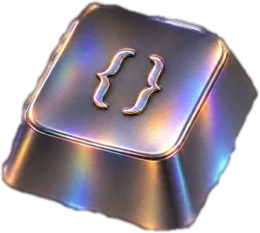
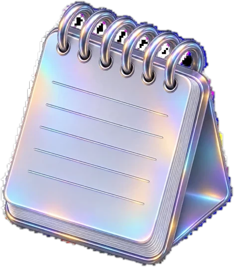
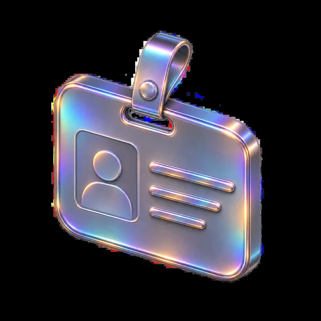

Designing for AI-led verticals@
Collaborators & recognition


 Riff·
Riff· Craft·
Craft· Narrate
Narrate


With 3 years in, I still let ideas run wild, obsess over the little things, and make sure the story gets told.




Plot twist: there is a life outside Figma.


Four little windows into the same person. Pick one.Accolades
Recognition, kept short.
accolades/ ├── 1st-airtribe-designathon ├── springer-aicte-publication ├── 2k-users-mind-alcove └── 30pc-faster-vendor-tasks
ID, please
I turn complicated systems into experiences that make sense.
id/ ├── resume.pdf ├── linkedin ├── email └── topmate
The toolkit
Four ways I turn messy into clear.
toolkit/ ├── product-and-ux ├── research-and-strategy ├── web-and-brand └── motion-and-interaction
On repeat
What I play, read and write on loop.
on-repeat/ ├── music ├── writing ├── moving-margins ├── grabb └── youtube


Everything has a story, most of them embarrassing. Hover anything.Storyteller
CompetitorCollector
Tinkerer
